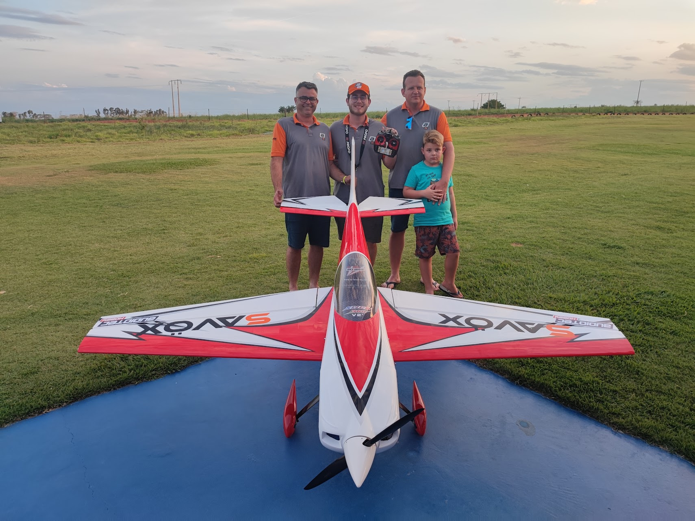
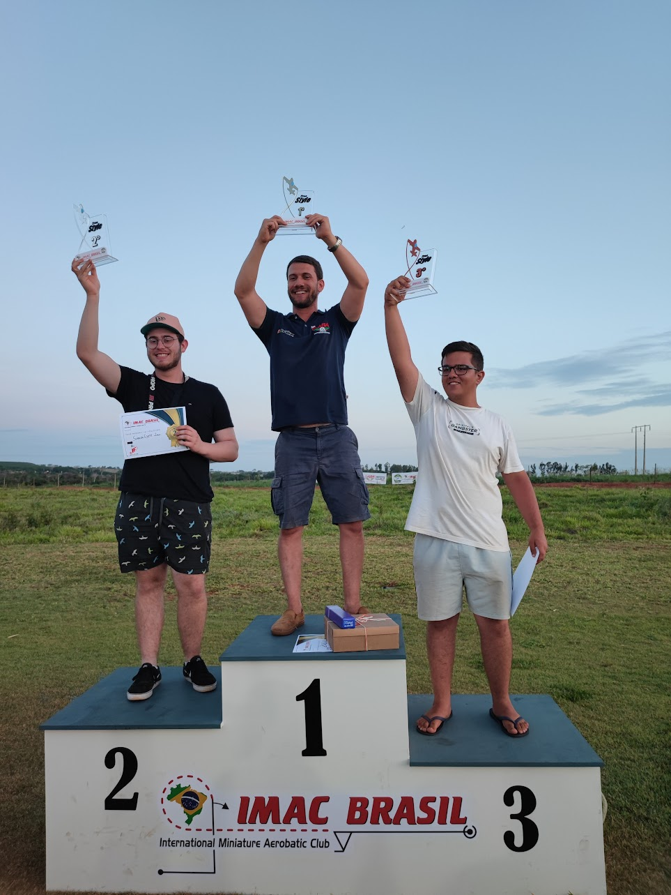

Proposta de Patrocínio - Aeromodelismo
Prezados Senhores,
Espero que esta mensagem os encontre bem. Meu nome é Gabriel Martinello, e tenho a honra de me dirigir a vocês como piloto de aeromodelismo, campeão do II Campeonato Freestyle RBO e representante de algumas das marcas mais respeitadas do setor no Brasil. Como AudiotecHobby, AeroHobby, JotaFlyer e Desert Aircraft
Escrevo para apresentar minha trajetória no aeromodelismo e propor uma parceria de patrocínio que pode trazer benefícios mútuos para nossa comunidade e para sua marca.
Minha Trajetória no Aeromodelismo
Sou um piloto apaixonado pelo aeromodelismo, com conhecimento técnico em setups, motores e performance. Ao longo dos anos, desenvolvi uma reputação sólida na comunidade brasileira de aeromodelismo, ajudando vários outros pilotos com setups e dicas de configurações. Tenho muita dedicação ao esporte e capacidade de influenciar positivamente outros pilotos.
Patrocínios Atuais e Representação de Marcas
Atualmente, tenho o privilégio de ser patrocinado por algumas das marcas mais respeitadas do aeromodelismo nacional e mundial:
Desert Aircraft
Motores de alta performance e confiabilidade mundial
AudiotecHobby
Maior loja de aeromodelismo do Brasil
AeroHobby
Equipamentos para Night Flight
JotaFlyer
Aviões de espuma 3D
Meu setup atual
- Avião: Extra NG 104" da Skywing
- Motor: DA 120
- Servos: Savox 2290
- Hélice: Falcon 28x9.5
- Baterias: Pulse
- Rádio: Graupner Mz 24 pro
Conquistas e Reconhecimento: IMAC 2022
Minha trajetória competitiva no aeromodelismo teve um marco especial no Campeonato IMAC 2022, realizado em Ribeirão Preto, São Paulo. Este evento foi particularmente significativo para mim, pois representou meu primeiro campeonato oficial, um momento que marcou o início da minha carreira competitiva no aeromodelismo brasileiro.
 
Conquistas e Reconhecimento: Freestyle RBO II
Minha dedicação e paixão pelo aeromodelismo foram coroadas com a vitória no II Campeonato Freestyle RBO, um evento de grande prestígio que reuniu 23 pilotos de destaque do Brasil e da Argentina, consolidando sua abrangência na América Latina.

Julgamento
O campeonato foi julgado por especialistas de renome mundial:
- Luis Tiago - Piloto e juiz de renome internacional
- Eric Camargo - Especialista em aeromodelismo freestyle
- Antônio de Souza - Autoridade em competições de aeromodelismo
Premiação Recebida
- 🏅 Medalha de Primeiro Lugar
- 🏆 Troféu de Campeão
- ✈️ Viagem com todas as despesas pagas para o IBIAPABA AEROFEST 2025 em Ubajara, Ceará
- 📦 Kit 104" da Skywing (a ser retirado na AudiotecHobby)
O Alcance da RBO
A RBO é uma plataforma extremamente influente no aeromodelismo, tanto no Brasil quanto globalmente. Seu blog é uma fonte de notícias e informações altamente acessada por entusiastas e profissionais do hobby em todo o mundo. Minha vitória neste campeonato não apenas solidifica minha posição como um dos principais pilotos da América Latina, mas também me proporciona uma visibilidade ímpar dentro de uma comunidade vasta e engajada.
Influência e Engajamento nas Redes Sociais
Minha presença online é uma extensão natural da minha paixão pelo aeromodelismo e do meu compromisso em compartilhar conhecimento e inspirar outros pilotos. Através de minhas plataformas no Instagram, YouTube, TikTok e Facebook, construí uma audiência engajada e fiel.
Minha base de seguidores é composta por entusiastas do aeromodelismo, pilotos iniciantes e experientes, e até mesmo figuras influentes no hobby no Brasil e no mundo. A interação constante com minha audiência, respondendo a perguntas, oferecendo dicas e demonstrando setups, me tornou uma referência para muitos.
Proposta de Valor para Sua Marca
Minha parceria com sua marca irá além de um simples patrocínio. Ofereço uma representação autêntica e engajada, baseada em:
Reputação como piloto e conhecedor técnico
Influência nas redes sociais e eventos
Capacidade de demonstrar e converter
Rede de contatos e relacionamentos
Contato:
+55 (46) 991360985
martinellogabriel@gmail.com